Сводка всего, что сделано в чате с Claude: решения, структура страниц, механики анимаций, ассеты, открытые вопросы и готовый промт для переноса макета в код и деплоя.
Заказчик: АО «РТ-Техприёмка», ГК «Ростех»Обновлено: 2 октября 2026
rttec-redesign/. Внутри: этот файл, CLAUDE.md, source/, assets/, content/, previews/.cd rttec-redesign && claude, или в десктоп-приложении → вкладка Code → выбрать папку). CLAUDE.md подхватится автоматически — там сжатый контекст проекта.npm run dev → откройте в браузере, прокрутите все scroll-сцены. Сверяйте с превью в папке previews/ и с живым макетом.gh repo create) и подключить Vercel или Netlify (бесплатно, статикой). Видео ~19 МБ суммарно — для GitHub Pages тоже подходит, Git LFS не нужен.| Что | Ссылка |
|---|---|
| Живой макет (все страницы, вкладки v2 / Направления / v1) | claude.ai/artifact/LerVHXGzpLxREFnhBriDxV |
| Исследование, CJM и структура сайта | claude.ai/artifact/1J1MLU1Dz1oEuui5vgp1Tm |
| CJM-карта РТ-Техприёмки | claude.ai/artifact/XYW5iyJWJUhYYfhFKs951x |
| Папка / файл | Содержимое |
|---|---|
CLAUDE.md | Контекст для Claude Code: страницы, формат исходников, токены, механики, ограничения. |
source/dc-local/ | Исходники страниц (.dc.html) с путями к ассетам, заменёнными на ../../assets/…. Работать с этими. |
source/dc-original/ | Те же файлы как в макете (пути /_blob/<id>) + canvas.json. |
assets/ | 32 файла: фото (webp), логотипы, 3 видео для скролл-сцен, постеры. assets-map.json — какой файл где используется. |
content/ | Исходные тексты заказчика: Эталон, РТ-Техпоставка (тексты Кволити+ — в разделе 5 ниже). |
previews/ | Скриншоты ключевых состояний — эталон для сверки после переноса. |
Формат Claude Design: обычный HTML + мини-шаблонизатор + класс логики. Переводится в любой фреймворк почти механически.
<x-dc>…</x-dc>; глобальный CSS — в <helmet><style>.{{name}} — значение из renderVals() (часто это строка inline-стиля, вычисленная от прогресса скролла).<sc-if value="{{flag}}"> — условный блок; <sc-for list="{{arr}}" as="x"> — цикл.class Component extends DCLogic — state, setState, componentDidMount (вешает scroll через requestAnimationFrame), renderVals().data-props — «твики» с вариантами блоков. Утверждены значения default; ветки других вариантов можно не переносить.href="Etalon.dc.html" → роуты сайта.| Страница | Твик | Утверждено |
|---|---|---|
| Главная | cards / verbs / cta / headerCta | C — фото на всю карточку / Медь из херо / Контур / Квадрат (контурный) |
| Эталон | about / services / imp | Сцена: фото → карточки / Карточка на экран / Сканер замены |
| Кволити+, Техпоставка | — | варианты уже зафиксированы в коде, твиков нет |
| Токен | Значение |
|---|---|
| Фон / подвал | #0D0D0E / #0A0A0B |
| Текст / приглушённый | #F4F3EF / rgba(244,243,239,.6–.72) |
| Линии / карточки | #2C2C2E / #121213 |
| Медный акцент | градиент #FFF1E2 → #FFD190 → #F19E65 → #B05A33 (класс .cu), одиночный #F19E65 |
| Цвета кросс-продаж | Автоматизация — сталь-синий, Сертификация — серебро, Метрология — медь, Снабжение — бронза, Полиграфия — белый |
| Шрифт | Onest 400/500/600 (Google Fonts). Без капса в заголовках, акцент — медным градиентом на ключевых словах |
| Кнопки | контурные, радиус 4px; квадрат со стрелкой ↗ для ссылок; в шапке — контурный квадрат |
| Сетка | поля 4vw, сетки 12 колонок, шапка 84px sticky с blur |
logo_scrub.mp4) перематывается скроллом. Логотип и меню в шапке появляются, когда кубы «приходят» на место.| # | Блок | Механика |
|---|---|---|
| 1 | Hero | Видео 15,6 с (6 сцен, −196 → −40 → +90 → +500 → +1500 → +1700 °C) скрабится скроллом; слева счётчик температуры и подпись сцены, внизу шкала до +2500, на финале подсвечивается «Излучатели АЧТ». H1 и кнопки появляются анимацией на старте. |
| 2 | О предприятии | Ч/б фото литейного цеха на весь экран с заголовком «Мы создаём эталоны точности для всей промышленности России с 1957 года» → сжимается влево; справа 3 компактные карточки въезжают по очереди: 70 лет экспертизы / Специализированные компетенции / Полный производственный цикл. |
| 3 | Три направления | Стопка карточек на экран (Датчики / Оборудование / Мониторинг), стеклянные кнопки-продукты. |
| 4 | Импортозамещение | «Сканер замены»: 4 замены (Rosemount 214C, WIKA TC10-B, WIKA TC83, JUMO 902005/40 → аналоги Эталона), своя схема датчика у каждой, таблица характеристик, ↑ = лучше оригинала. |
| 5 | Кейсы | 3 предприятия-ячейки, переключение кейса с фото; ссылка «Смотреть все кейсы на сайте «Эталон»». |
| 6 | FAQ | Аккордеон 6 вопросов, слева «Задать вопрос». |
| 7 | Форма | «Подберём решение под вашу задачу». |
| 8 | Кросс-продажи | «Закроем задачу целиком, а не только датчиками» — бенто 5 цветных карточек-вопросов в один экран + ссылки на прочие направления. |
| 9 | Подвал | Как на главной. |
Блок «Почему выбирают» на Эталоне удалён (аргументы уже раскрыты выше). На Кволити+ и Техпоставке он остался — kinetic-экраны крупным шрифтом.
| Где | Что проверить / заменить |
|---|---|
| Все страницы | Фото сгенерированы ИИ — по возможности заменить реальными съёмками. |
| Главная | Кейсы и логотипы клиентов (Аэрокон, Сталь-Меридиан, Кварта-Электроника) — вымышленные. «[Адрес головного офиса]» в подвале. Подписи направлений «[Одна строка о направлении]». |
| Эталон | «70 лет экспертизы» — в 2026 г. прошло 69 (если не к юбилею 2027 — «почти 70»). Характеристики в сканере замены — условные; модель для Rosemount 214C без номера. Кейсы — демо. URL сайта Эталона и страницы кейсов — заглушки #. Лицензия Ростехнадзора: точная формулировка. FAQ: срок «от [2–4] недель», 44-ФЗ/223-ФЗ, отгрузка с поверкой. |
| Кволити+ | Этапы сертификации (типовые), срок «[1–3 месяца]» в FAQ, «Более 10 лет» (посчитано от 2015). |
| Техпоставка | Описания этапов поставки и ответы FAQ — сформулированы по смыслу; позиция в карточке статуса вымышленная; фото/видео нет. |
| Кросс-продажи | Ссылки на ещё не сделанные направления — #. |
| Техника | Мобильная версия не сверстана (v2). Форма никуда не отправляет — нужен обработчик (email/CRM). Пользователь — маркетолог ЦИ; Bitrix24/Airtable как приёмник заявок обсудить. |
Скопируйте целиком в первый запрос в Claude Code, открытом в папке пакета.
Прочитай CLAUDE.md и README-HANDOFF.html — это перенос макета сайта rttec.ru (АО «РТ-Техприёмка») из Claude Design в код. Задача: 1. Создай проект на Astro (TypeScript, без UI-библиотек) в этой папке: src/pages, src/components, src/styles, public/assets (скопируй assets/ туда). 2. Перенеси 4 страницы из source/dc-local/: Main.dc.html → /, Etalon.dc.html → /solutions/etalon, Quality.dc.html → /solutions/quality, Supply.dc.html → /solutions/supply. Hub-v1, Mega, Mobile — архив, не переносить. 3. Для каждой страницы бери только утверждённые варианты блоков (default в data-props), остальные ветки sc-if выкидывай. 4. Логику renderVals/onScroll перенеси в небольшие клиентские скрипты (vanilla TS) по компонентам: ScrollVideoHero, AboutScene, ServicesStack, ImportScanner, KineticWhy, CasesSwitcher, Faq, ContactForm, CrossSellBento, Header, Footer. Расчёт прогресса скролла и все тайминги сохрани 1:1. 5. Общие токены (цвета, медный градиент .cu, Onest, отступы) — в src/styles/tokens.css. Шапку и подвал сделай общими компонентами. 6. Тексты переноси дословно. Ссылки между страницами — на новые роуты. 7. Добавь prefers-reduced-motion, корректные alt, мета-теги и OG для каждой страницы. 8. Сверь результат с previews/*.png (сделай скриншоты Playwright тех же состояний и покажи различия). 9. Инициализируй git, сделай коммит, затем помоги задеплоить: GitHub-репозиторий + Vercel (или Netlify). Работай поэтапно: сначала каркас и главная, покажи результат, потом страницы направлений.
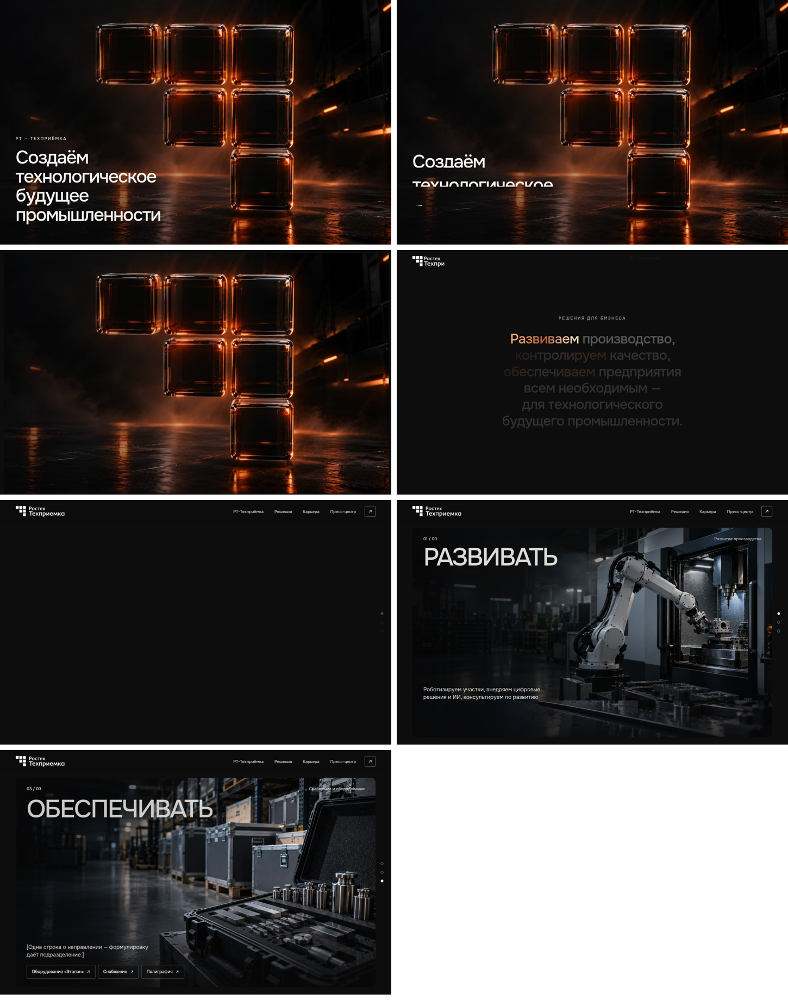
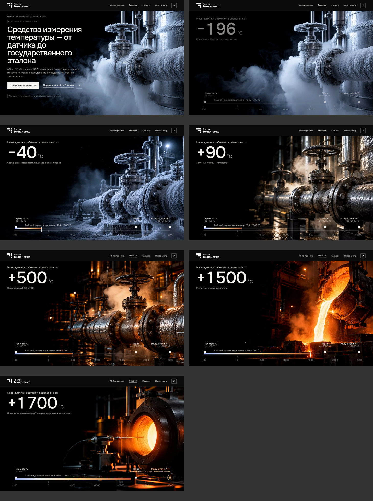
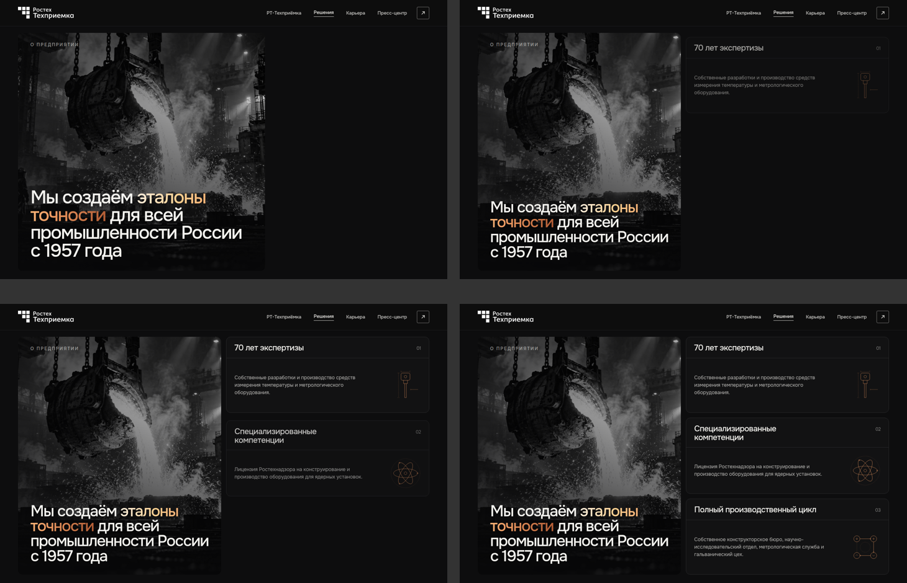
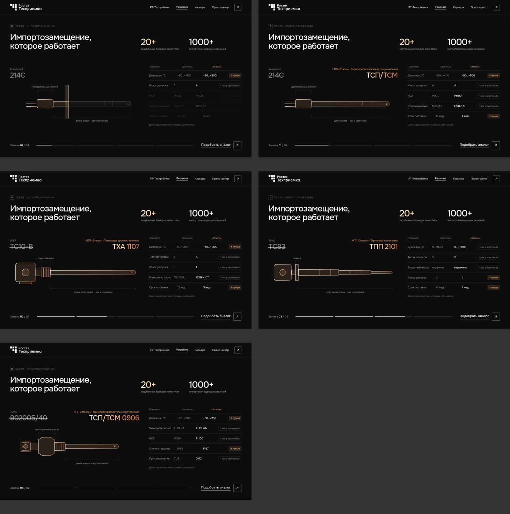
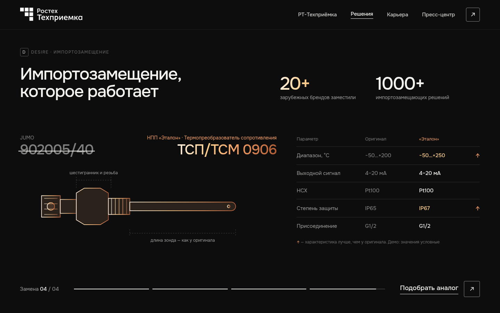
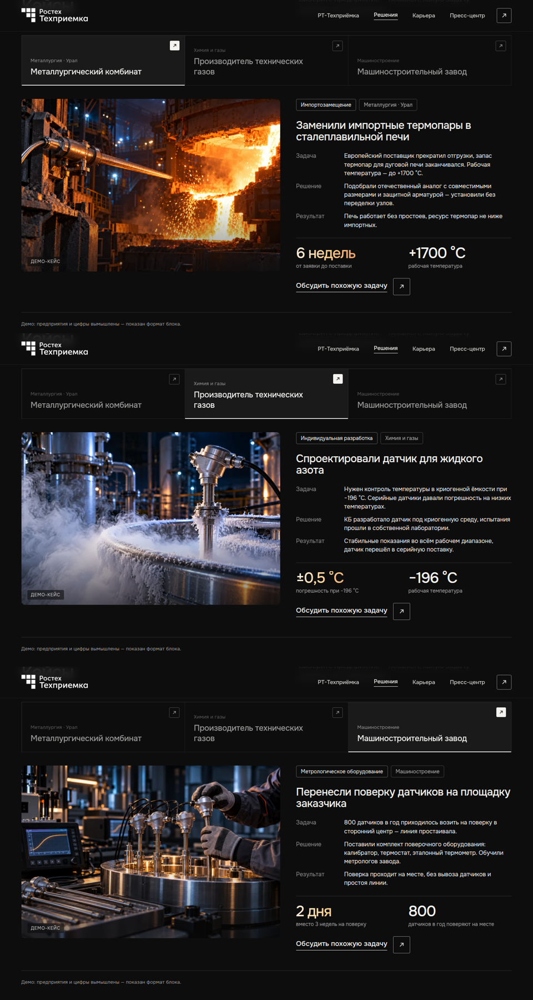
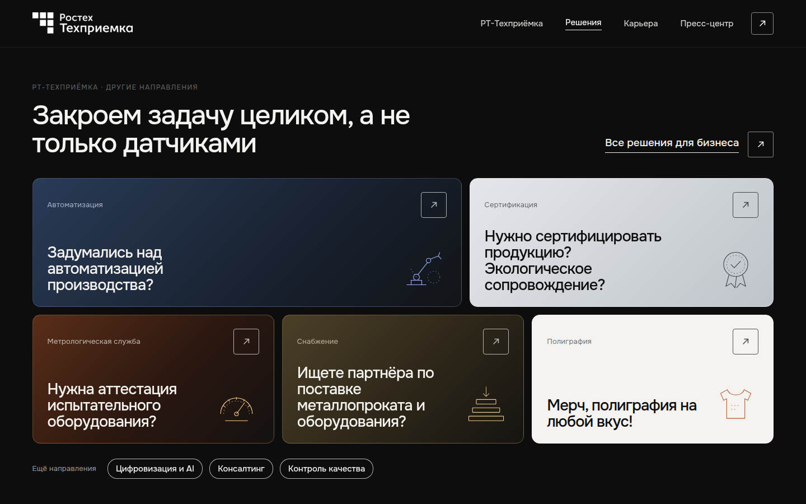
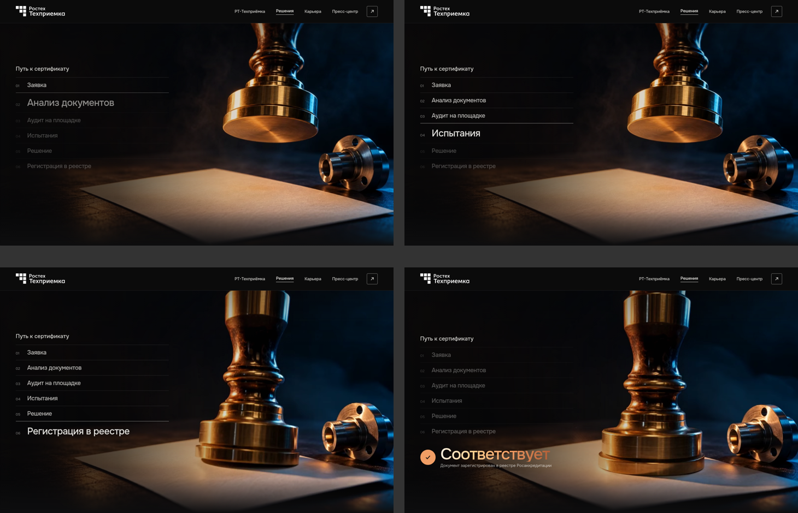
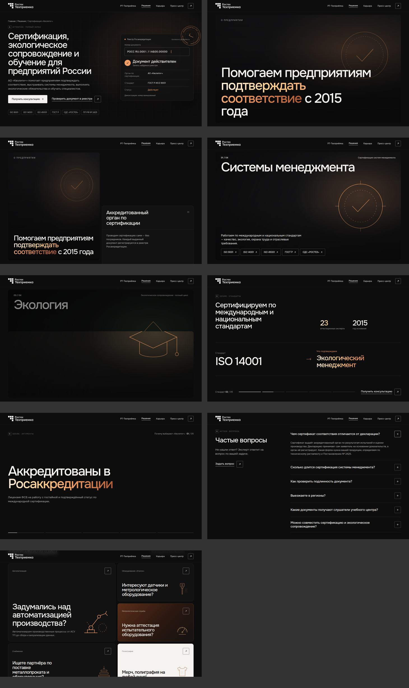
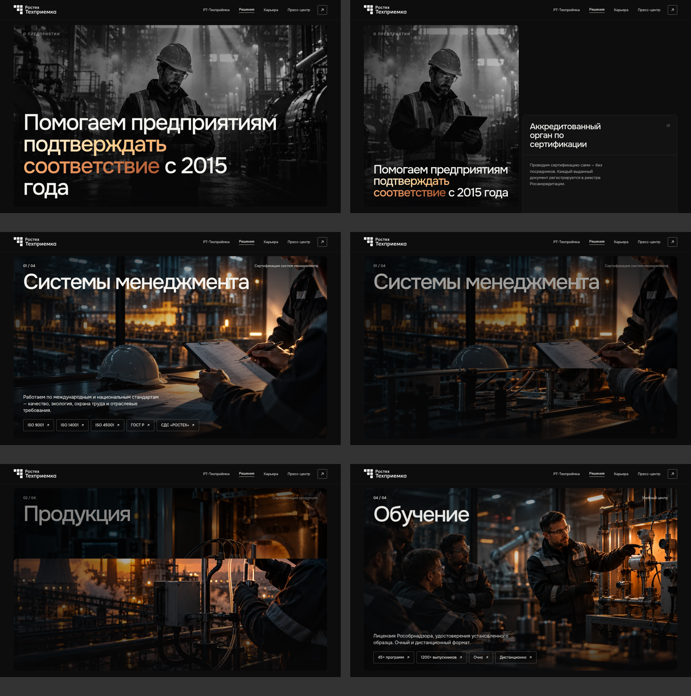
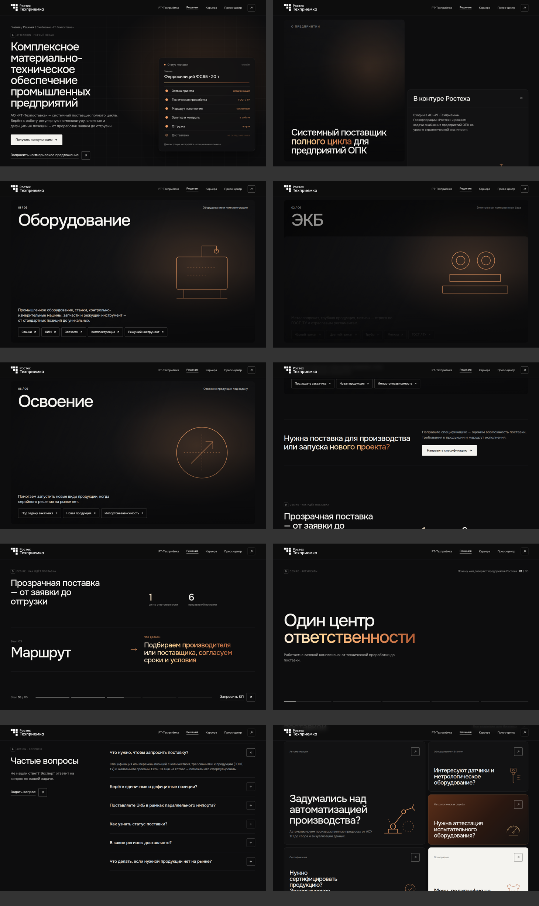
Превью в архиве сделаны упрощённым рендером без шрифтовых и видео-нюансов — эталон по ощущению и анимациям остаётся живой макет по ссылке выше.